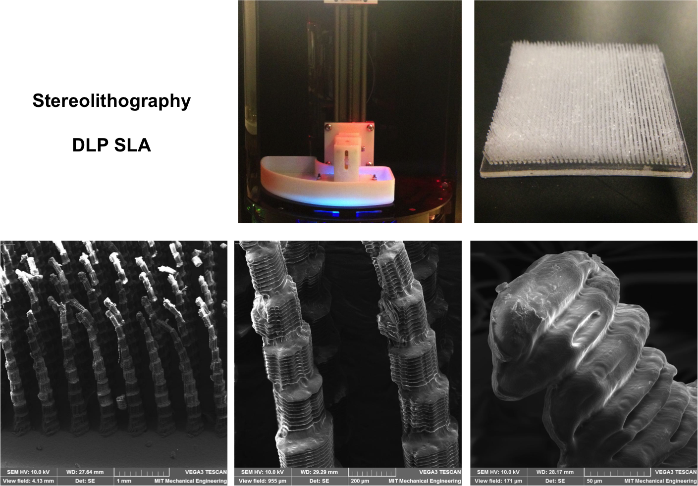
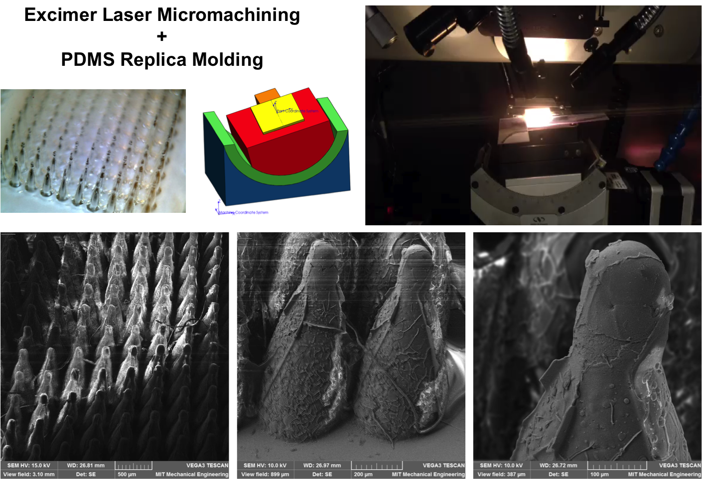
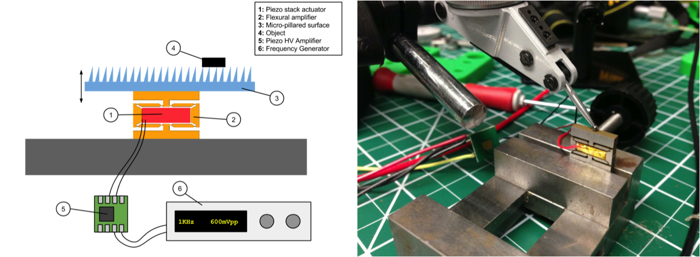

For a hands-on micro/nano fabrication class my teammates, Jifei Ou and Lining Yao, and I looked at ways to make programmable force fields to predictably convey and orient parts on a surface. By vibrating surfaces covered with arrays of oriented micropillars, we were able to move and control parts based on anisotropic friction.
We developed two different approaches to fabricate the surfaces:
In the first approach we used a DLP based SLA 3D printer to directly print the micropillars.
The second approach involved laser micromachining an acrlyic mold using a 5-axis Excimer laser system and then casting the micropillar substrate using a PDMS replica-molding process.
To vibrate the pillars, we used a piezo stack actuator. The 9mm piezo stack nominally produces a maximum stroke of approximately 9um. Using a flexural amplifier, which we fabricated using a wire-edm, we increased this stroke to approximately 150um (a little less than a 20x stroke amplification).
We patterned the surfaces such that objects placed on it would be pushed toward the center and off to one side. These videos the ability of the surface to both convey small parts and orient them.
We used a high speed camera to try to discern exactly what is going on. We found that the speed of conveyance was linear with both frequency and amplitude of vibration for both the PDMS and the 3D-printed pillars.
More details about this project can be found in our write-up, here.